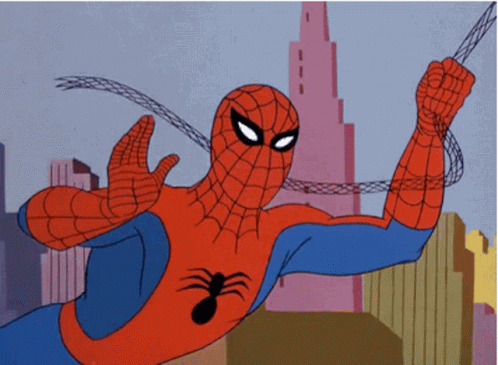

Homem aranha é visto dançando
Ele voa muito.
Homem aranha é visto pensativo

Minha nossa.
Spiderman

Caramba o céu está lindo
Curiosidades do Homem Aranha
O Homem-Aranha (Spider-Man), o alter ego de Peter Parker, é um super-herói das revistas em quadrinhos publicadas pela Marvel Comics. Criado pelo escritor/editor Stan Lee e pelo escritor/artista Steve Ditko, o Homem-Aranha surgiu em Amazing Fantasy #15 (agosto de 1962)
Aliados
capitão america

Steve Rogers era um rapaz franzino que, durante a Segunda Guerra Mundial, tinha como maior sonho servir aos Estados Unidos na luta contra os nazistas. Mas sua saúde frágil seria um eterno empecilho, se o rapaz não aceitasse participar em um experimento que poderia transformá-lo em um novo homem. Rogers foi inoculado com o Soro do Supersoldado e ganhou músculos e alta estatura quase imediatamente.
Hulk

Hulk, por vezes referido como O Incrível Hulk (The Incredible Hulk, no original em inglês), é um personagem de quadrinhos/banda desenhada do gênero super-herói, propriedade da Marvel Comics, editora pela qual as histórias do personagem são publicadas desde sua criação, na década de 1960. Concebido pelo roteirista Stan Lee (1922–2018) e pelo desenhista Jack Kirby (1917–1994)
Homem de Ferro

Homem de Ferro (Iron Man) é um personagem dos quadrinhos publicados pela Marvel Comics. Sua verdadeira identidade é o empresário e bilionário Tony Stark, que usa armaduras de alta tecnologia no combate ao crime. Foi criado em 1963 pelo escritor Stan Lee, o roteirista Larry Lieber e os desenhistas Jack Kirby e Don Heck.
Vilões
Doctor octopus

Doutor Octopus (alter ego do Dr. Otto Gunther Octavius) é um personagem de quadrinhos da Marvel Comics, um supervilão que é um dos arqui-inimigos do Homem-Aranha. Criado pelo roteirista Stan Lee e o artista Steve Ditko, o personagem apareceu pela primeira vez em The Amazing Spider-Man #3 (julho de 1963)
Duende verde

O Duende Verde é o alter-ego de Norman Osborn, um supervilão fictício que aparece nas histórias em quadrinhos norte-americanas publicadas pela Marvel Comics. O personagem foi criado pelo escritor Stan Lee e pelo artista Steve Ditko, aparecendo pela primeira vez na revista The Amazing Spider-Man #14 (julho de 1964). O chefe industrial e amoral da Oscorp tomou uma fórmula que aprimorou as suas capacidades físicas e seu intelecto, mas também o levou à loucura.
Venom

história do Venom começa no planeta Klyntar, na galáxia de Andrômeda. Desse modo, o personagem é membro de uma raça alienígena de simbiontes que recebem o mesmo nome que o planeta. No geral, o planeta era um mundo frio e selvagem, onde a lei do mais forte é a principal regra.